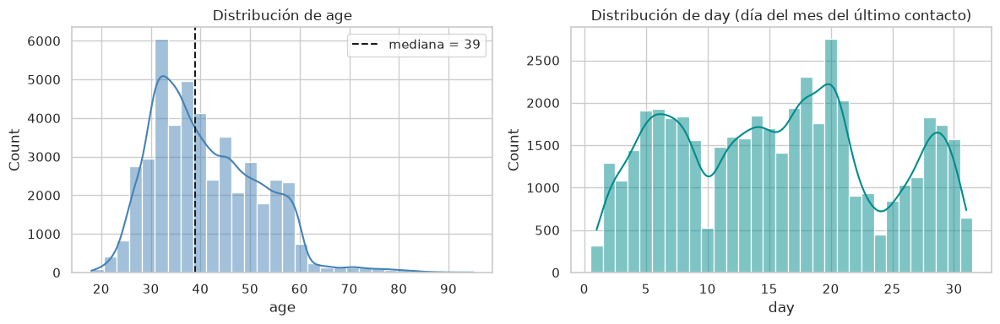
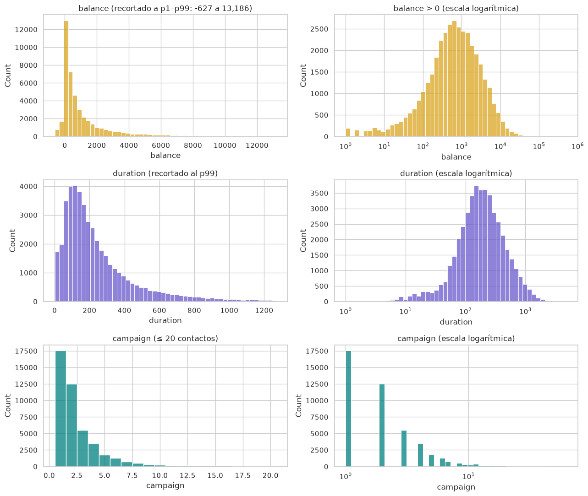
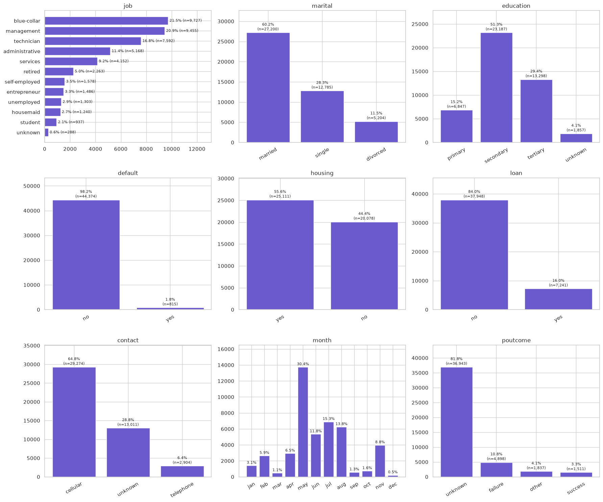
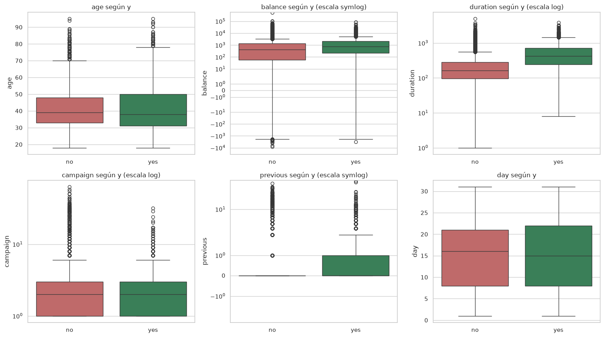
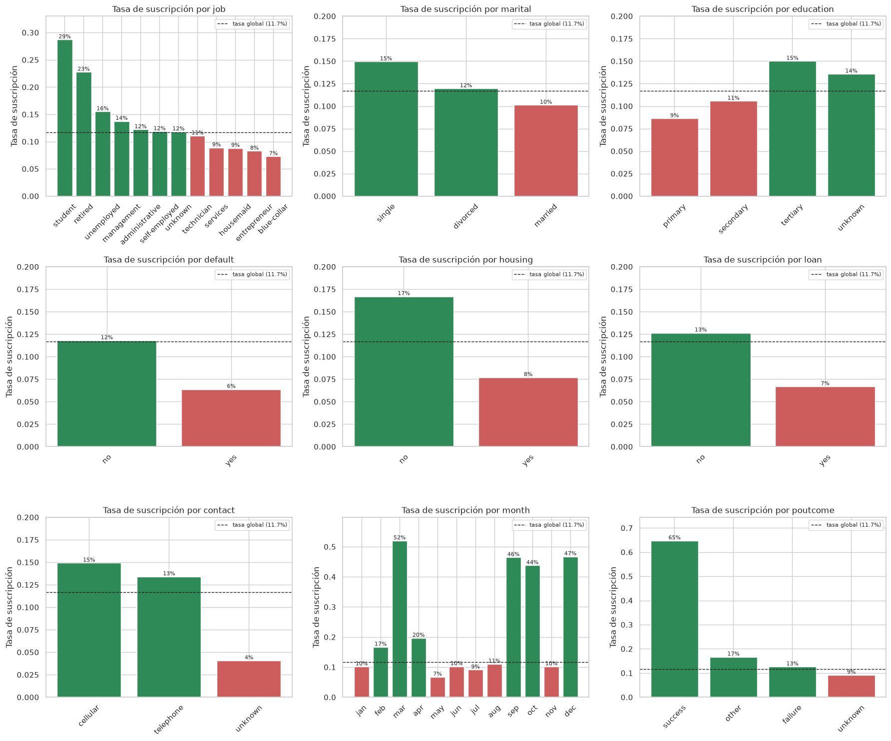
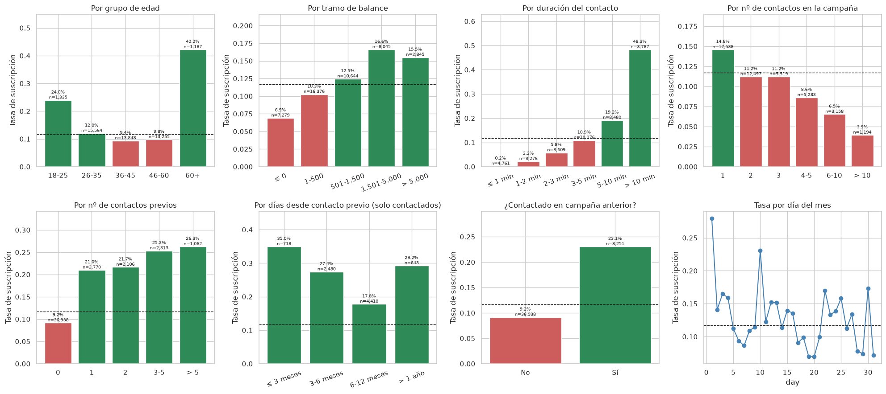
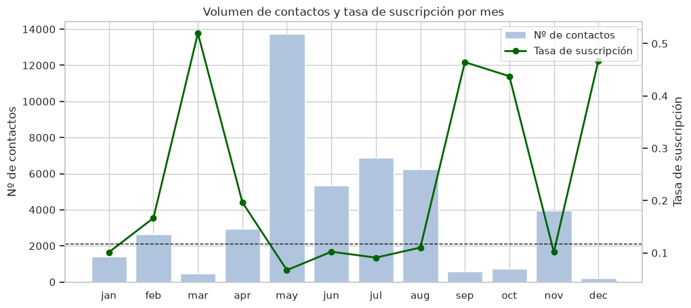
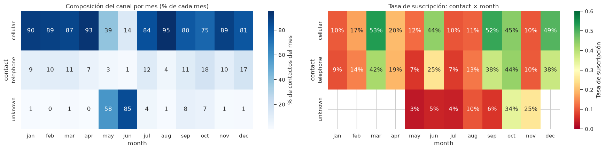
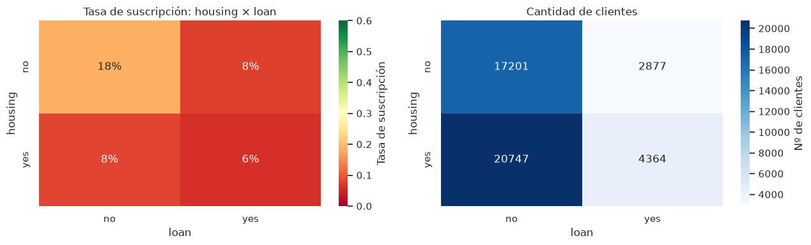
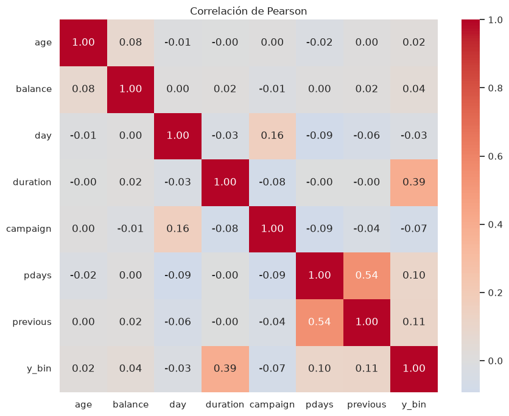

Análisis Exploratorio
de Datos
Campaña de marketing bancario
Dónde se ubica un EDA
| Fase | ¿Es EDA? | En nuestro trabajo |
|---|---|---|
| 1 · Comprensión del negocio | No, marco previo | Pregunta de investigación |
| 2 · Comprensión de los datos | Sí, núcleo | Diapos 3 a 15 |
| 3 · Preparación de los datos | Sí, en parte | Diapos 5, 12 y 18 |
| 4 · Modelado | Próximo paso | Recomendaciones (17–19) |
| 5 · Evaluación | Próximo paso | Métricas sugeridas (17) |
| 6 · Despliegue | No | Fuera del alcance |
¿Qué características del cliente (demográficas y financieras) y qué factores de la campaña (frecuencia, temporalidad y canal) se asocian con una mayor probabilidad de suscribir un depósito a término?
Telemarketing para colocar depósitos a término
| Grupo | Variables |
|---|---|
| Perfil del cliente | age · job · marital · education |
| Situación financiera | default · balance · housing · loan |
| Campaña actual | contact · day · month · duration · campaign |
| Campaña anterior | pdays · previous · poutcome |
| Objetivo | y · ¿suscribió el depósito a término? |
Los faltantes estaban escondidos
A simple vista el dataset parece completo.
Valores codificados como “unknown”
Tres variables, una misma historia
| Variable creada | Cómo se construye | Para qué |
|---|---|---|
| contactado_antes | pdays distinto de −1 (sí / no) | Comparar tasas: 23,1 % vs. 9,2 % |
| pdays_real | pdays con el −1 reemplazado por vacío | Días reales entre contactados (mediana ~194) |
| y_bin | yes = 1, no = 0 | Su promedio por grupo es la tasa |
| month, education | Categorías ordenadas | Gráficos en orden natural |
Además: balance, duration y pdays convertidas de float a entero.
Casi nadie dice que sí
La variable objetivo está muy desbalanceada: por cada cliente que suscribe, hay más de siete que no.
Predominio de asimetría positiva
| Variable | Asimetría | Lo que muestra |
|---|---|---|
| balance | ≈ 57 | Mediana 448 vs. media 1.374 |
| campaign | ≈ 4,9 | Hasta 63 contactos |
| duration | ≈ 3,1 | Mediana 180 s, máximo 4.918 s |
| age | casi 0 | Casi simétrica, mediana 39 |
| day | — | Uniforme a lo largo del mes |
En escala original todo se aplasta contra el cero
- balance · durationEn escala log se ven casi simétricas.
- ageSe concentra entre 28 y 60 y cae de golpe a los 60, posiblemente por la jubilación.


Frecuencias por categoría
- month30 % de los llamados se hicieron en mayo: la campaña se concentró en pocos meses.
- default98 % de los clientes no tiene deuda en mora: la variable casi no varía.
- poutcome82 % no tuvo campaña anterior; solo el 3,3 % la había aceptado.
- contact29 % de los contactos no tiene canal registrado.
- job59 % son blue-collar, management o technician.

duration es la que más separa
| Sí | No | |
|---|---|---|
| duration | 426 s | 164 s |
| campaign | 2,1 | 2,8 |
| balance | 732 | 417 |
| age | medianas casi iguales | |

Tasa de suscripción
por categoría
- poutcomeAceptó la campaña anterior: 65 %. Sin historial: 9 %.
- monthMayo, el mes con más llamados: 6,7 %. Marzo o diciembre superan el 44 %, con pocos llamados.
- contactPor celular: 15 %. Sin canal registrado: 4 %.
- housingSin hipoteca: 16,7 %. Con hipoteca: 7,7 %.
- jobEstudiantes: 29 %. Jubilados: 23 %. Los más altos.

Tramos: relaciones que la correlación no ve
Pasamos cada variable numérica a tramos y calculamos la tasa de suscripción en cada uno. Así aparecen formas en U y umbrales que un coeficiente lineal no detecta.
- Edad · forma de UJóvenes y mayores de 60 suscriben mucho más que el resto.
- Duración · crece sostenidaCuanto más larga la llamada, mayor la tasa.
- Contactos · insistir baja la tasaMás llamados al mismo cliente, menor la tasa.
- Saldo · umbralLa tasa sube con el saldo hasta 1.500 y después se estabiliza.

Una variable sola puede engañar
Mayo: 13.748 contactos y 6,7 %. Marzo: 477 y 52 %.

96 % de los unknown cae en mayo-junio, pero aun ahí rinde menos: mayo 3 % vs. 12 % por celular.

Sin hipoteca ni préstamo: ~18 %. Con al menos uno: 6-8 %.

Sin multicolinealidad grave
- duration con yr ≈ 0,39 · la única fuerte
- pdays con previousr ≈ 0,54 · cuentan lo mismo
- Resto entre predictoras|r| ≤ 0,16

Todas las variables con la misma vara
V = √( χ² / (n · (k − 1)) )
De 0 (independientes) a 1 (una determina a la otra). Las numéricas se pasan antes a tramos.
¿Quién tiene más probabilidad de suscribir?
Del lado del cliente
- Aceptó una campaña anterior (~65 %) o al menos fue contactado antes (23 % vs. 9 %)
- Está en los extremos de edad: 18-25 o, sobre todo, más de 60
- No tiene créditos vigentes y tiene saldo positivo
Del lado de la campaña
- Contactado por celular o teléfono, no por canal desconocido
- Pocos llamados en la campaña: insistir baja la tasa
- Efectos menores: educación terciaria, soltero
Precauciones antes de modelar
duration es la más fuerte, y es una trampa
Se conoce recién al cortar la llamada. Un modelo que la use se ve excelente en el papel, pero no sirve para decidir a quién llamar.
El entregable del EDA para la etapa siguiente
Incluir
poutcome
age (en tramos)
job · housing · loan
balance (transformada)
education · marital
campaign
Con cuidado
month
contact
pdays_real
previous + contactado_antes: una sola representación
Descartar o revisar
duration · fuga
default · casi constante
day · sin señal